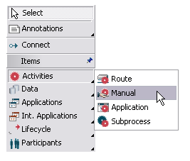
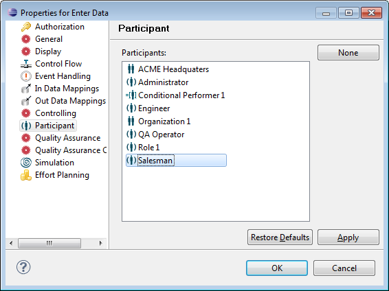
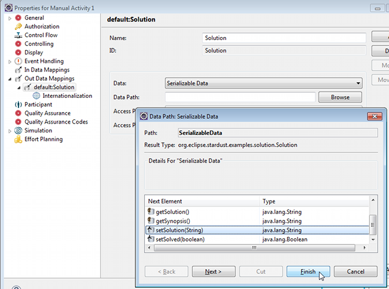

Manual activities are interactive activities without an associated interactive application context, see Activities.
To create a manual activity in the Stardust diagram:

Figure: Create a Manual Activity
To choose the participant of the manual activity, double-click the activity to open its properties dialog. Select Participant. On the right side of the pane a list of possible participant is displayed, where you can choose one. You can also remove the selected participant by pressing the None button.

Figure: Select the Participant of the Manual Activity.
As mentioned before, the Workflow Execution Perspective will generate panels/pages for manual activities. Data mappings for manual activities are created in a default context, which is described in section Default Context of chapter Specifying Data Mappings.
A generated panel collects all data mappings belonging to the particular activity and represents them in suitable fields. This is done as follows:
The table below summarizes the data types with their corresponding GUI fields. Note that primitive Java types and their corresponding wrapper types are considered the same.
| Data Type | GUI Field |
|---|---|
| boolean | a check box |
| char | an entry field with a character validating function |
| byte | an entry field with a byte validating function |
| short | an entry field with a short validating function |
| int | an entry field with an integer validating function |
| long | an entry field with a long validating function |
| float | an entry field with a float validating function |
| double | an entry field with a double validating function |
| String | an entry field |
timestamp (java.util.Date)
|
an entry field with a pattern function and calendar utility. |
| other | unsupported GUI mapping |
The following example shows how a generated panel for a manual activity Solve Problem looks like. It wires the properties of a serializable data Problem to the fields of the panel:
public class Problem
{
String getElaboration()...
String getSynopsis()...
Date getNotedOn()...
String getSolution()...
boolean isSolved()...
void setSolution(String s)...
void setSolved(boolean b)...
...
Define data mappings as in the following figure:

Figure: Data Mappings for the Activity Solve Problem
Note that unsupported XSD types are displayed on UI with simple String input field without any validations or converters. The unsupported XSD types are:
Other unsupported fields are not displayed on UI. Also, for any unsupported fields warning is logged on console. Process Priority is displayed as -1, 0, 1 instead of Low, Normal, and High.